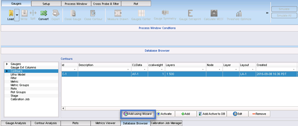

Contours can be used as an alternate calibration
method for models. Simulation tests can be compared against the
contours either independently or in conjunction with gauges.
Prerequisites
A Contour Layer Information (CLI) file, as described in the Calibre WORKbench User’s and Reference Manual or
a contour sites CSV file. (see the section “Sites CSV File Guidelines”)
The associated
layout file, containing clip layers; each clip has a bounding box
for an extracted SEM contour. The layout file should be flat.
Calibre WORKbench
invoked and Calibre nmModelflow activated.
Procedure
- In Calibre
nmModelflow, open the Database Browser, choose the Contours list,
and click Add using Wizard.

- In the
first Contour Wizard screen, choose Contour to just use a contour,
or Gauges and Contours to associate a set of gauges with the contour.
- Set the
CLI file and the weight the contours should have on the calibration
as a value between 0.0 (0%) and 1.0 (100%). If you selected Gauges
and Contours, you must also select a gauge file. Click Next to
continue.
Tip Starting with the 2020.1 release,
you can change the weight for contours later from the following
locations:
- ccalweight —
By changing the ccalweight field in the Database Browser, Contours list
- weight and weightlayer —
By editing individual CLI file contents in the Contours list
- Select
the layout file associated with the contours, set the comments for
the node type, layer type, and a description of the layout file.
Click Next.
- In the
Choose Layers screen, add all relevant layers other than the clip
layer, then click Next. For example, for
a topo modeling contour, you would add the OPC layer, the active
layer, and optionally the FinFET layer and the poly layer.
- Inspect
the commands that Calibre nmModelflow will perform on the last wizard
screen. If they are acceptable, click Finish.
Results
A new entry for the contour is added to the Database Browser
list.